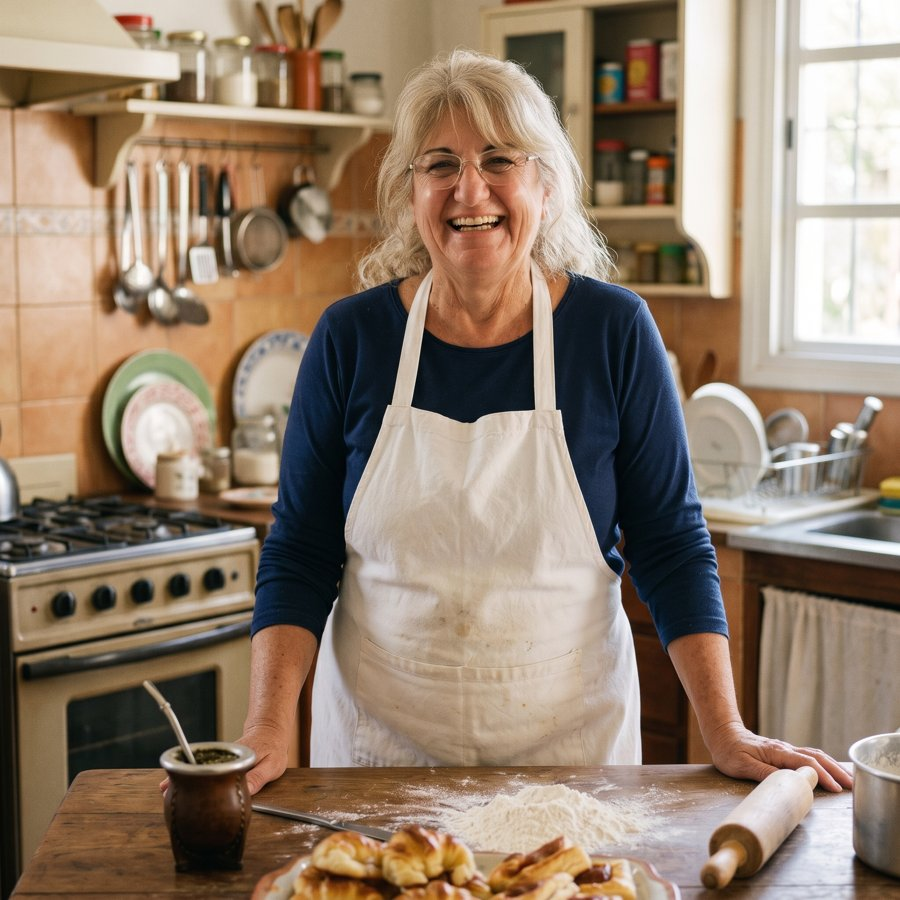
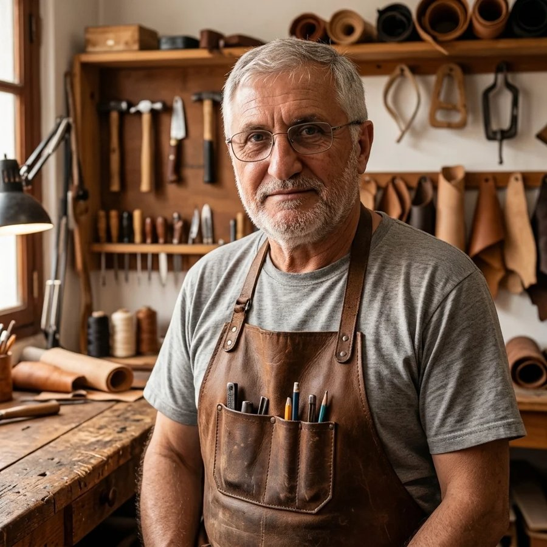
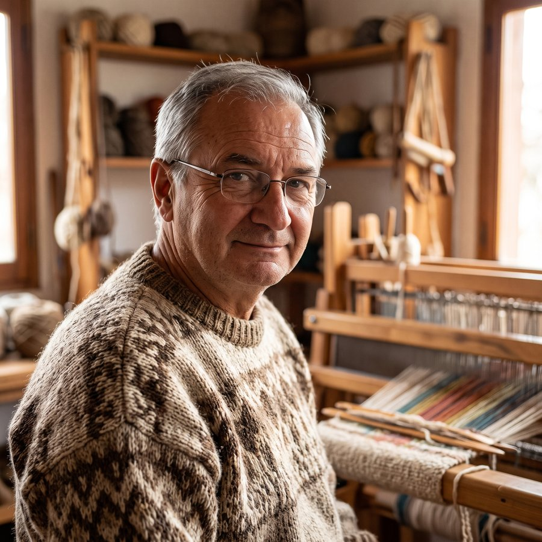
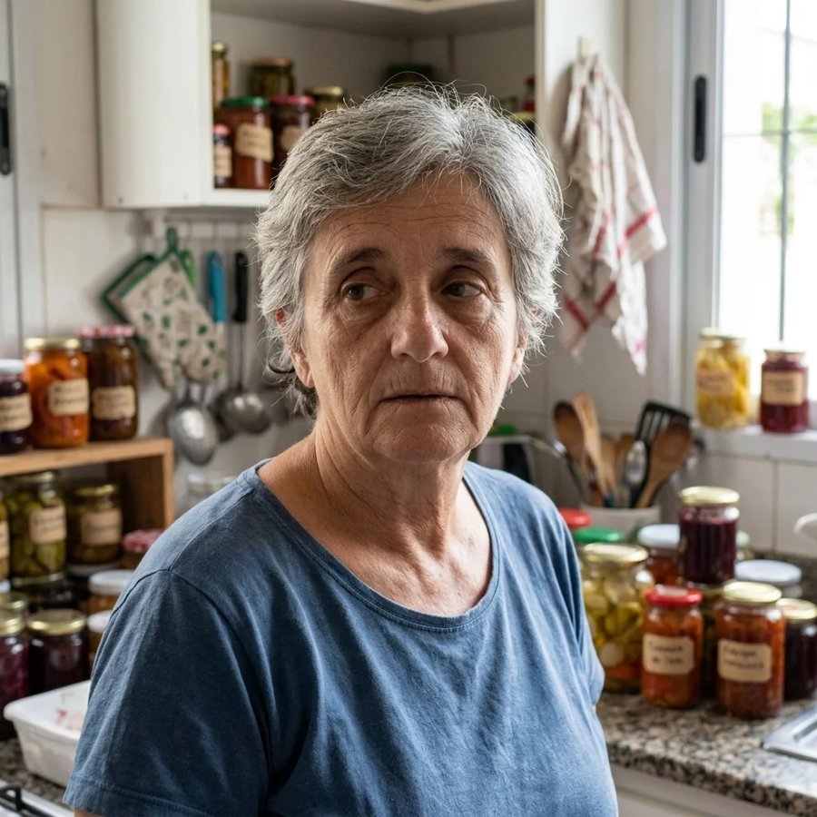
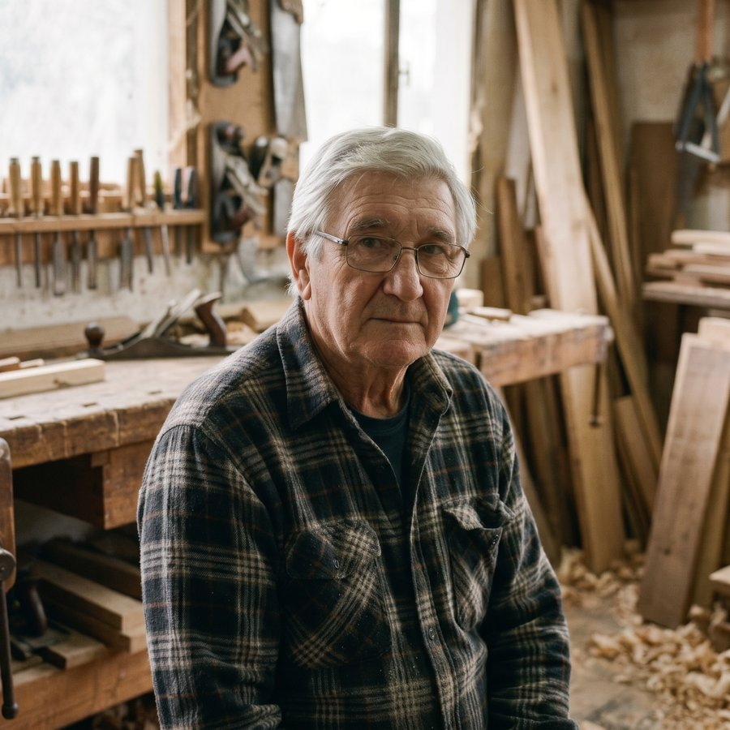

Personas
Una colección de personas que caracterizan rasgos y cualidades reales de quienes usan Yo Emprendo.

Elsa · La Cautelosa
58 años · Tejido y marroquinería
“A veces por temor uno no se mete. Mejor cuando venga fulano que me lo haga.”
Ver persona →

Marta · La Exploradora
65 años · Pastelería y repostería
“Hasta que no le das el aceptar, no pasa lo que estás probando. Entonces pruebo y después voy para atrás.”
Ver persona →

Raúl · El Productor
55 años · Marroquinería
“La abrí y no sabía a dónde ir. Si es rápido y me deja ver mis cosas, la uso.”
Ver persona →

Hugo · El Usuario Pasivo
62 años · Telar y bordado
“Quiero aprender a hacerlo, pero me pierdo con tanta cosa.”
Ver persona →

Norma · La Saturada
68 años · Conservas y dulces
“Me mareo con tanta cosa junta. Prefiero que la pantalla tenga una sola cosa a la vez.”
Ver persona →

Carlos · El Escéptico
72 años · Carpintería
“Si hay un papel, lo leo. En el celular no veo nada.”
Ver persona →